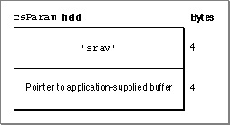
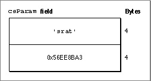

Important: Inside Macintosh: Sound is deprecated as of Mac OS X v10.5. For new audio development in Mac OS X, use Core Audio. See the Audio page in the ADC Reference Library.
Writing a Sound Input Device Driver
This section describes what you need to do when you do write a sound input device driver. If you write a sound input device driver, you should set thedrvrFlagsfield of the sound input device driver's header to indicate that the driver can handle Status, Control, and Read requests. The driver header should also indicate that the driver needs to be locked.
After you create a device driver, you must write an extension that installs it. Before your extension installs the driver, it should pass the
- IMPORTANT
- You don't need to write a device driver to use sound input capabilities.

Gestaltfunction thegestaltSoundAttrattribute selector and inspect thegestaltSoundIOMgrPresentbit to determine if the sound input routines are available. If so, the extension should install the sound input device driver into the unit table just as any other driver must be installed.After installing the driver, the extension must then make an Open request to the driver, so that the driver can perform any necessary initialization. In particular, the driver might set the
dCtlStoragefield of the device control entry to a pointer or a handle to a block in the system heap containing all of the variables that it might need. Finally, the device driver signs into the Sound Input Manager by calling theSPBSignInDevicefunction.Once signed in, a driver can receive Status, Control, and Read requests from the Sound Input Manager. On entry, the A0 register contains a pointer to a standard Device Manager parameter block, and the A1 register contains a pointer to the device control entry. For more information on using registers in a device driver, see Inside Macintosh: Devices.
Responding to Status and Control Requests
The Sound Input Manager supports sound input device information selectors by sending your device driver Status and Control requests. It uses Status requests to get information about your device; it uses Control requests to change settings of your sound input device.The behavior of your sound input device driver in response to Status and Control requests depends on the value of the
csCodefield of the Device Manager control parameter block. If thecsCodefield contains 2, then the sound input information selector is passed in the first 4 bytes of thecsParamfield of the Device Manager control parameter block. For Status requests, the next 18 bytes can be used for your device driver to pass information back to an application. For Control requests, these 18 bytes are used by an application to pass data to your sound input device driver.Figure 3-1 shows the contents of the
csParamfield of the Device Manager control parameter block for a sample Status request. The first four bytes of thecsParamfield contain the input selector'srav', which is a request for the available sample rates. The next four bytes of the field contain a pointer to an application-supplied buffer in which to return the data (the number of rates available) from the Status request.Figure 3-1 An example of the
csParamfield for a Status request
On exit from the Status request, your sound input device driver can respond in one of two ways. If you are returning fewer than 18 bytes of data, your device driver should specify in the first 4 bytes of the
csParamfield of the Device Manager control parameter block the number of bytes of data being returned and place the data in the following 18 bytes. In this case, the Sound Input Manager copies the data to the application-supplied buffer identified in Figure 3-1. If you are returning more than 18 bytes of data, your device driver should copy the data to the application-supplied buffer. In this case, your device driver needs to place a zero in the first 4 bytes of thecsParamfield to indicate to the Sound Input Manager that the data has already been copied to the application-supplied buffer.Figure 3-2 shows the contents of the
csParamfield of the Device Manager control parameter block for a sample Control request. The first four bytes of thecsParamfield contain the input selector'srat'which determines the sample rate for the sound input device. The next eighteen bytes contain the data, which in this example is the sample rate to set for your sound input device. This is aFixedvalue of four bytes in length.Figure 3-2 An example of the
csParamfield for a Control request
Your sound input device driver must respond to a core set of selectors, but the remaining selectors defined by Apple are optional. Your device driver might also define private selectors to support proprietary features. (Selectors containing all lowercase letters, however, are reserved by Apple.) The section "Getting and Setting Sound Input Device Information" beginning on page 3-10 lists the core selectors and other selectors that have been defined.
- Note
- Some sound input information selectors require your sound input device driver to allocate a handle in which to store information. In this case, your driver should attempt to allocate an appropriately sized handle in the current heap zone. If allocation fails, your driver should return the appropriate Memory Manager result code.

If the
csCodefield contains 1 (which can occur only for Control requests), the Sound Input Manager is attempting to stop asynchronous recording; that is, it is issuing aKillIOrequest. In response to this, the driver should stop copying data to the application buffer, update theioActCountfield of the request parameter block, and return via anRTSinstruction.Before exiting after a Status and Control request, your sound input device driver should fill the D0 register with the appropriate result code or
noErr. To exit, your sound input device driver should check whether the Status and Control request was executed immediately or was queued.
Your sound input device driver can determine whether a request is issued immediately by checking the
- Note
- In current versions of system software, the Sound Input Manager always issues Status and Control requests immediately. This might change in future versions of system software.
noQueueBitin theioTrapfield of the Device Manager control parameter block. If the request was made immediately, the Control routine should return via anRTSinstruction; if the request was queued, the Control routine should jump to the Device Manager'sIODonefunction via the global jump vectorJIODone. You need to make sure that the A0 and A1 registers are set the same as they are on entry to the device driver orJIODonewill fail.Responding to Read Requests
When a sound input device receives a Read request, it must start recording and saving recorded data into the buffer specified by theioBufferfield of the request parameter block. If that field isNIL, the driver should record but not save the data. During a Read request, your sound input device driver can access the sound parameter block that initiated recording through theioMiscfield of the request parameter block.If a previous Control request has assigned a sound input interrupt routine to the device driver and your driver records asynchronously, then the driver must call the routine each time its internal buffer becomes filled, setting up registers as described in "Defining a Sound Input Interrupt Routine" on page 3-10. The buffer size that your device driver specifies in the D1 register should indicate how much your device records during every interrupt. For example, a sound input device driver that uses the serial port might use a buffer as small as 3 bytes. For the built-in sound input port on the Macintosh LC and other Macintosh models, the buffer is 512 bytes long.
Your device driver should update the
ioActCountfield of the request parameter block with the actual number of bytes of sampled-sound data recorded. This allows the Sound Input Manager to monitor the activity of your device driver. Whether your device driver operates synchronously or asynchronously, it should complete recording by jumping to the Device Manager'sIODonefunction via the global jump vectorJIODone. You need to set the D0 register to the appropriate result code before jumping to the Device Manager'sIODonefunction.Supporting Stereo Recording
Many sound input devices support recording stereo sounds (that is, sounds from two or more channels). If you are writing a device driver for a stereo device, you need to make sure that you support thesiNumberChannels,siActiveChannels, andsiActiveLevelsselectors.The
siNumberChannelsselector controls the number of sound input channels and thereby determines the format of the data stream your device driver produces. If the number of channels is 1, the driver should produce monophonic data in response to a Read request. If the number of channels is 2, the driver should produce interleaved stereo data in response to a Read request.The
siActiveChannelsselector controls which of the available input channels are used for recording. The active channels are specified using a bitmap value. For example, the value $01 indicates that the first channel (the left channel) is to be used. The value $02 indicates that the second channel (the right channel) is to be used.The
siNumberChannelsandsiActiveChannelsselectors together determine the exact format of the output data stream. If the current number of channels is 1 and the current active channel bitmap is $01, the driver should produce a stream of monophonic data containing samples only from the left input channel. If the current number of channels is 1 and the current active channel bitmap is $02, the driver should produce a stream of monophonic data containing samples only from the right input channel. If the current number of channels is 1 and the current active channel bitmap is $03, the driver should mix the right and left channels to produce a stream of monophonic data. If the current number of channels is 2 and the current active channel bitmap is $03, the driver should produce a stream of interleaved samples from the left and right input channels.
- Note
- If the
siActiveChannelsselector is never passed to a sound input device driver, it's recommended that the active channel default bitmap for both monophonic and stereo recording should be $03. When the active channel bitmap conflicts with the number of channels (for example, there are two channels but the active channel bitmap is $01), you should use the default value of $03.Supporting Continuous Recording
If your sound input device driver supports continuous recording, it must do more than respond to Status, Control, and Read requests. It must also, if continuous recording is on, begin recording into an internal ring buffer as soon as a Read request completes. The buffer should be made large enough so that the sound input device driver can support successive requests to theSPBRecordfunction in most circumstances; however, if your driver exhausts the internal buffer, your driver should begin recording again at the start of the buffer.When the sound input device driver receives a subsequent Read request, it should record to the application's buffer first all of the data in the internal ring buffer and then as much fresh data as it can record during one interrupt.
If a Read terminates due to a
KillIOrequest, your sound input device driver does not need to continue recording samples to the internal ring buffer until after the next uninterrupted Read request.